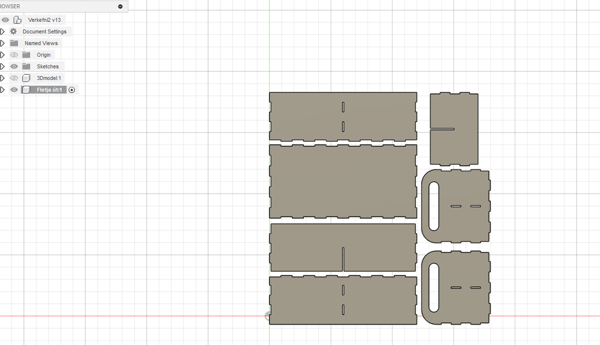

Verkefni 2: Tölvustuddur skurður
Tölvustudd framleiðsla (Vél608G)
Markmið verkefnisins
Verkefnið skiptist í tvo hluta. Annars vegar átti að nota vínylskera til að búa til límmiða, 100x50cm skurðflötur að hámarki. Hins vegar átti að hanna parmetrískt, gerineglt módel og skera það út með geislaskera. Efnið sem var í boði að vinna með var 4mmx500mmx500mm birkikrossviður eða 3mmx500mmx500mm akríl (Glært, svart eða hvítt). Hönnunin þurfti að innihalda a.m.k. þrjá geirneglda festipunkta.
Vínylskurður
Fyrir þennan hluta verkefnisins byrjaði ég á því að skoða myndir á google til að reyna fá hugmyndir um hvað ég gæti notað sem límmiða. Ég ákvað síðan eftir smá leit að nota mynd af einhverjum fjöllum sem ég fann.Næst náði ég í inkscape og opnaði myndina þar inni. í Inkscape bjó ég síðan til bitmap trace af myndinni tók út fyllinguna og setti línuþykkt inn í stroke and fill í 0.02.

Þá var komið að því að fara til Hafliða og skera þetta út. Fyrst setti ég skrána á USB til þess að geta opnað hana í tölvunni sem tengist vínylskeranum. Þar stillti ég stærð myndarinnar með ctrl+A og stærð blaðsins í inkscape inn í document properties og vistaði þetta svo sem pdf. Þá var komið að því að skera þetta út, ég valdi hvítan límmiða og kom efninu fyrir í skeranum. Eftir smá leiðbeiningar frá Hafliða var þetta klárt. Eina sem var þá eftir var að skera afgangs efnið burt með dúkahníf og setja límband á límmiðan svo hægt væri að líma hann á þann stað sem maður vildi. Hér fyrir neðan má svo sjá hvernig þetta kom út
.Geislaskurður
Undirbúningsvinna
Áður en ég byrjaði á þessu verkefni hafði ég enga hugmynd um hvað ég ætlaði að hanna þ.a. ég skoðaði verkefni hjá nemendum fyrri ára til að sjá hvernig þeir höfðu unnið þetta verkefni. Að auki skoðaði ég mikið af hlutum á netinu inn á síðum eins og https://www.thingiverse.com/ og https://www.pinterest.com/. Eftir mikla skoðun fannst mér sniðugt að gera einhvern hlut sem ég gæti geymt ýmis smádót í, eins og skriffæri, strokleður eða bara hvað sem er. Ég leitaði því að einhverju svoleiðis á google og rakst á þetta hér. Stóra boxið sem er sýnt á fyrstu sekúndunum fannst mér líta vel út og hugmyndin var því að gera eitthvað því líkt, en samt ekki alveg eins. Ég ákvað svo að lokum að gera eins ramma en hafa skiptinguna á plássinu innan í boxinu öðruvísi.
Teikning í fusion360
Eftir að ég var búinn að ákveða hvað ég ætlaði að hanna var komið að því að teikna það í Fusion360. Ég hafði hins vegar aldrei notað það áður þ.a. ég horfði nokkur myndbönd sem má finna hér, hér og hér. Þessi mynbönd sýna mjög vel hvernig maður getur notað paramtra og hvernig maður teiknar box með finger-joints. Fyrst var að teikna bötnflötinn og hliðarnar sem festist saman með "finger-joints". Til þess að búa þetta til var mikið notast við "extrude", "rectangular pattern" og "combine".
"extrude" var notað til þess að fá teikningunar í 3D og til þess að skera burt úr botn- og hliðarplötunum fyrir finger-joints. "rectangular pattern" var síðan notað til þess að fá fleiri finger-joints með jöfnu bili. "combine" var notað til þess að sameina hliðarplötur og botnflöt, þ.e.a.s. ef að plata er ekki með nein finger-joints og skarast við aðra plötu með finger-joints þá býr "combine" skipunin til finger-joints svo plöturnar passi saman. Öll þessi tól eru sýnd vel hér. Samsetning botnflatar og hliða leit þá svona út (festingagötin á hliðunum komu seinna):
Næst var þá að skipta plássinu inn í boxinu í hólf. Ég ákvað að skipta því niður í fjögur hólf með því að setja 2 plötur sem mynda kross. Til þess að gera þetta byrjaði ég á því að búa til göt á allar fjórar hliðarnar. Síðan teiknaði ég ferhyrning utan á yfirborð hliðar, "extrudaði" það yfir í hliðina á móti og "combine-aði" það við hliðarnar. Til þess að fá plöturnar inn í boxinu til að passa saman gerði ég tvo jafn breið göt í miðjuna, með hæð sem er helmingurinn af hæð Zplatanna, þ.a. plöturnar renna inn í hvora aðra. Lokateikningin leit þá svona út:
>Í verkefnalýsingunni kom fram að þetta ætti að vera paremtrísk hönnun og hér fyrir neðan má sjá þá parametra sem voru notaðir.
Kerf prófun
Áður en það var hadlið lengra þurfti að gera kerf prófun, því geislinn í geislaskeranum tekur hluta af efninu burt og var því mikilvægt að gera ráð fyrir því í Fusion. Þetta var hópverkefni og vann ég það með Arnóri Daða og Agli Smára. Til þess að leysa þetta verkefni voru fyrst tíu kassar teiknaðir hlið við hlið inní Fusion áður en það var síðan "exportað" sem dxf skrá og opnað inn í Inkscape. Þar inni voru sömu skref framkvæmd og fyrir myndina í vínilskurðar hlutanum, skráin svo vistuð sem SVG skrá og sett á USB. Hafliði hjálpaði okkur síðan að gera þetta klárt í tölvunni sem er tengd við geislaskerann, akríl var komið fyrir í geislaskeranum og þetta sett af stað. Þegar geislaskerinn var búinn að skera út þessa 10 kassa voru þeim raðað upp hlið við hlið, uppvið hvorn annan og lengdin mæld. Lengdin sem við mældum fyrir kassana var 98,94 mm og svæðið sem kassarnir voru í var 100,02 mm. Til þess að finna gildið á kerf var mismunurinn á þessum tveimur tölum deilt með 11 og þá fékkst að kerfið okkar væri 0,09818 mm.
Fletja teikninguna út og setja inn kerf
Næsta skref í Fusion360 var að leggja alla parta hönnunarinnar niður á sama plan. Til þess að læra hvernig það er gert horfði ég á þetta myndband hér. Eftir að ég hafði farið í gegnum þetta myndband leit þetta svona út:
Til þess að gera ráð fyrir kerf í Fusion þurfti svo að fara inn í "manifacture" og búa til nýtt setup, þar sem mikilvægt er að z-ás snúi upp. Undir "fabrication" má svo finna "cutting" og "2D profile" (Sjá mynd fyrir neðan). Þar inni er valið geislaskera og kerfið sem mældist skrifað inn. Þetta myndband hér sýnir mjög vel hvernig þetta er gert.
Það síðasta sem þurfti svo að gera í Fusion var að fara inn í post process og "exporta" þessu í dxf skrá.
Inkscape
inn í Inkscape var skráin síðan opnuð og stærðin á blaðinu sett sem 500mmx500mm undir document properties. Eins og áður inn í "stroke and fill" var valið ekkert fill, "flat color" stroke paint og 0,02mm í stroke style. 
En áður en allur hluturinn er skorinn út þarf að gera prufu á festingunum þ.e. bara skera út það sem er nauðsynlegt fyrir það á myndinni fyrir ofan. Skráin í Inkscape var svo vistuð sem SVG skrá, sett á USB og opnað í tölvunni sem tengist geislaskeranum.
Geislaskurður og samsetning
Til þess að koma þessu yfir í geislaskerann er ýtt á ctrl+P og enter. í glugganum sem opnast er svo valið "thickness" undir "Auto focus", acryl 3mm valið og þykkt plötu skrifuð inn, sem hafði áður mælst 2,7mm. Festingar voru svo prófaðar en þær voru of lausar. Það þurfti því að fara aftur í fusion og setja inn nýtt kerf, 0.15mm var prófað næst. Það reyndist ennþá vera of lítið og 0.2mm því prófað. Það var hins vegar of mikið og að lokum reyndist 0.18mm vera gott kerf. Tennurnar smullu saman og götin pössuðu.
Það var þá ekkert annað í stöðunni en að skera út allan hlutinn. Þegar ég fór svo að setja hlutinn saman pössuðu tennurnar vel (þar sem rétta kerf-ið hafði verið fundið) en ég náð ekki að festa saman innri plöturnar saman og í götin á hliðinum. Það benti til þess að þykktin á plötunni væri ekki rétt. Ég mældi þá þykktina á efninu sem ég var að skera út og það reyndist vera 2,8 mm en ekki 2,7 mm eins og ég hafði áður mælt og hélt ég þá að ég hefði bara mælt vitlaust síðast. Ég fór þá í Fusion, setti þykktin sem 2,9mm og gerði nýja prófun en ennþá passaði þetta ekki alveg. Þykktin var þá sett í 3mm og enn önnur prófun gerð. Núna small þetta allt saman, þ.a. ég fékk nýja plötu og skar allt aftur út. samsetningin hófst þá aftur en allt í einu núna vildi þetta ekki smella saman eins og hafði gerst í prófuninni. Þá kom í ljós að þessi plata væri 3,3 mm, eða 0,4 mm þykkari en prufu platan, það þýðir að það getur greinilega verið mikill munur á þykkt platanna þótt þér séu allar frá einni stórri plötu. Ég talaði því við Hafliða og hann var hissa á ví hversu mikill munur var á milli plata. Við ákváðum þá að ég fengi eina plötu í viðbót til að ná þessu. Til þess að vera viss um að hún væri jafn þykk alls staðar mældi ég öll hornin með skífumáli og reyndust þau öll vera 3.1 mm. Ég fór þá einu sinni í viðbót í Fusion og setti þykktina sem 3,3 mm (0,2mm meira en hafði mælst þar sem það hafði passað í fyrri prófun). Kýlt var á þetta í síðasta skiptið og allt skorið út. Þetta var allt loksins að smella vel saman en þá tók ég eftir því að það vantaði tennur á breiddar-enda botnplotunnar og önnur innri platan var ekki alveg rétt. Ég kíkti þá í Fusion til þess að athuga hvers vegna þetta gerðist en fann ekki ástæðuna. Það var allt í lagi að breyta þykktinni í allar tölur minni eða jafnt og 3, en þegar ég fór í eitthvað stærra en 3 varð þetta eitthvað skrýtið og veit ég ekki hvers vegna. Það var þá ákveðið að segja þetta gott þarna, þar sem það hafði farið mikill tími og efni í þetta. Svekkjandi að fá ekki verðlaunin eftir mikla vinnu. Hér fyrir neðan sést það besta sem var hægt að fá úr þessu.
Hér má finna hönnunina inn á Thangs.com
Vinnuálag
| Nr | Verkþáttur | Klukkutímar |
|---|---|---|
| 1 | Undirbúningsvinna og leit að hugmyndum | 3 |
| 2 | Vínylskurður | 1,5 |
| 3 | Vinna í Fusion360 | 6 |
| 4 | Kerf prófun | 1 |
| 5 | Geislaskurður og samsetning | 7 |
| 6 | Vefsíðugerð | 6,5 |
| Heildartími | 25 |